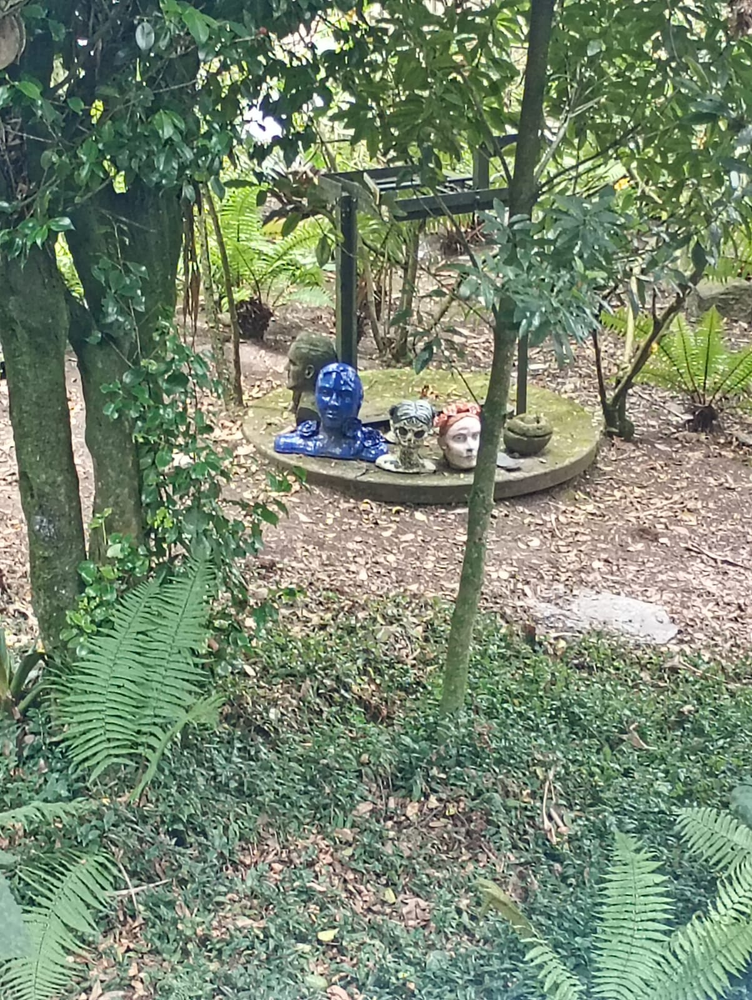

Se dice que este rito tiene sus raíces en las antiguas civilizaciones que habitaban la región, y que su propósito era honrar a los dioses de la naturaleza y asegurar la prosperidad de las cosechas.
El rito consiste en una serie de ceremonias y rituales que se llevan a cabo en lugares sagrados, como templos y montañas, y que incluyen ofrendas, danzas y cantos.
Hoy en día, el Rito de los Andes sigue siendo practicado por algunas comunidades indígenas, quienes lo consideran una parte importante de su identidad cultural y espiritual.